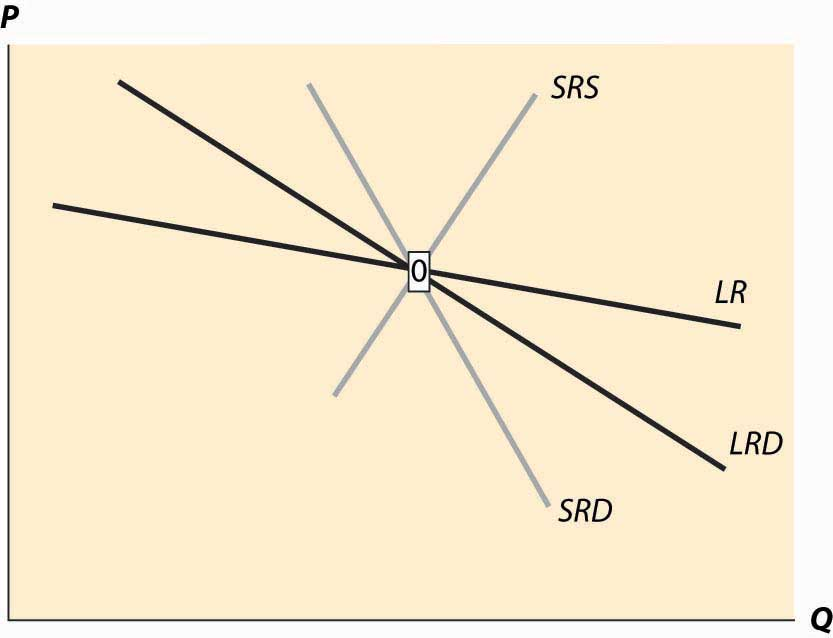
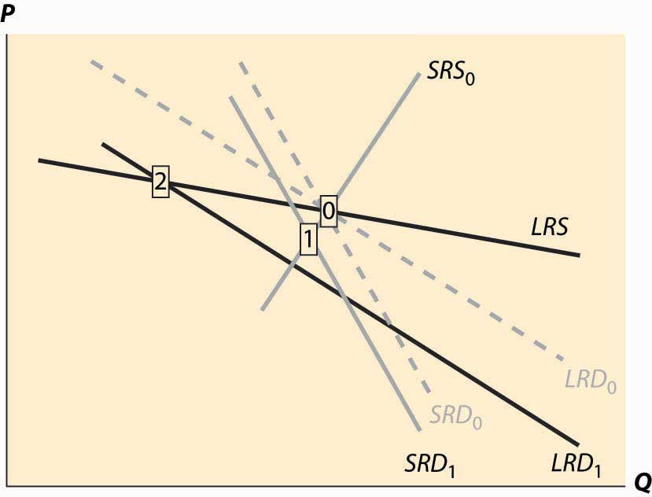
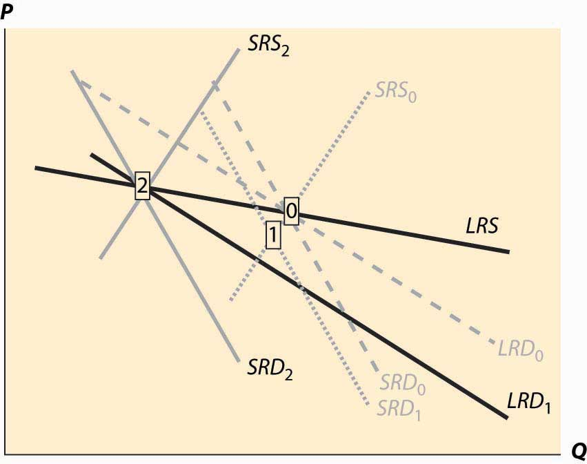
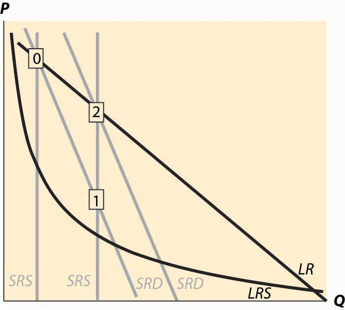
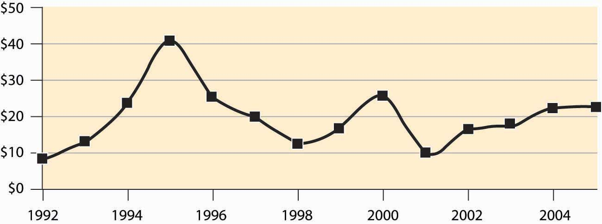

The previous section made two simplifying assumptions that won’t hold in all applications of the theory. First, it assumed constant returns to scale, so that long-run supply is horizontal. A perfectly elastic long-run supply means that price always eventually returns to the same point. Second, the theory didn’t distinguish long-run from short-run demand. But with many products, consumers will adjust more over the long-term than immediately. As energy prices rise, consumers buy more energy-efficient cars and appliances, reducing demand. But this effect takes time to be seen, as we don’t immediately scrap our cars in response to a change in the price of gasoline. The short-run effect is to drive less in response to an increase in the price, while the long-run effect is to choose the appropriate car for the price of gasoline.
To illustrate the general analysis, we start with a long-run equilibrium. Figure 10.10 "Equilibrium with external scale economy" reflects a long-run economy of scale, because the long-run supply slopes downward, so that larger volumes imply lower cost. The system is in long-run equilibrium because the short-run supply and demand intersection occurs at the same price and quantity as the long-run supply and demand intersection. Both short-run supply and short-run demand are less elastic than their long-run counterparts, reflecting greater substitution possibilities in the long run.
Figure 10.10 Equilibrium with external scale economy
Figure 10.11 Decrease in demand
Now consider a decrease in demand, decreasing both short-run and long-run demand. This is illustrated in Figure 10.11 "Decrease in demand". To reduce the proliferation of curves, we colored the old demand curves very faintly and marked the initial long-run equilibrium with a zero inside a small rectangle.The short-run demand and long-run demand have been shifted down by the same amount; that is, both reflect an equal reduction in value. This kind of shift might arise if, for instance, a substitute had become cheaper; but the equal reduction is not essential to the theory. In addition, the fact of equal reductions often isn’t apparent from the diagram, because of the different slopes—to most observers, it appears that short-run demand fell less than long-run demand. This isn’t correct, however, and one can see this because the intersection of the new short-run demand and long-run demand occurs directly below the intersection of the old curves, implying both fell by equal amounts. The intersection of short-run supply and short-run demand is marked with the number 1. Both long-run supply and long-run demand are more elastic than their short-run counterparts, which has an interesting effect. The short-run demand tends to shift down over time, because the price associated with the short-run equilibrium is above the long-run demand price for the short-run equilibrium quantity. However, the price associated with the short-run equilibrium is below the long-run supply price at that quantity. The effect is that buyers see the price as too high, and are reducing their demand, while sellers see the price as too low, and so are reducing their supply. Both short-run supply and short-run demand fall, until a long-run equilibrium is achieved.
Figure 10.12 Long-run after a decrease in demand
In this case, the long-run equilibrium involves higher prices, at the point labeled 2, because of the economy of scale in supply. This economy of scale means that the reduction in demand causes prices to rise over the long run. The short-run supply and demand eventually adjust to bring the system into long-run equilibrium, as Figure 10.12 "Long-run after a decrease in demand" illustrates. The new long-run equilibrium has short-run demand and supply curves associated with it, and the system is in long-run equilibrium because the short-run demand and supply, which determine the current state of the system, intersect at the same point as the long-run demand and supply, which determine where the system is heading.
There are four basic permutations of the dynamic analysis—demand increase or decrease and a supply increase or decrease. Generally, it is possible for long-run supply to slope down—this is the case of an economy of scale—and for long-run demand to slope up.The demand situation analogous to an economy of scale in supply is a network externality, in which the addition of more users of a product increases the value of the product. Telephones are a clear example—suppose you were the only person with a phone—but other products like computer operating systems and almost anything involving adoption of a standard represent examples of network externalities. When the slope of long-run demand is greater than the slope of long-run supply, the system will tend to be inefficient, because an increase in production produces higher average value and lower average cost. This usually means that there is another equilibrium at a greater level of production. This gives 16 variations of the basic analysis. In all 16 cases, the procedure is the same. Start with a long-run equilibrium and shift both the short-run and long-run levels of either demand or supply. The first stage is the intersection of the short-run curves. The system will then go to the intersection of the long-run curves.
An interesting example of competitive dynamics’ concepts is the computer memory market, which was discussed previously. Most of the costs of manufacturing computer memory are fixed costs. The modern DRAM plant costs several billion dollars; the cost of other inputs—chemicals, energy, labor, silicon wafers—are modest in comparison. Consequently, the short-run supply is vertical until prices are very, very low; at any realistic price, it is optimal to run these plants 100% of the time.The plants are expensive, in part, because they are so clean—a single speck of dust falling on a chip ruins the chip. The Infineon DRAM plant in Virginia stopped operations only when a snowstorm prevented workers and materials from reaching the plant. The nature of the technology has allowed manufacturers to cut the costs of memory by about 30% per year over the past 40 years, demonstrating that there is a strong economy of scale in production. These two features—vertical short-run supply and strong economies of scale—are illustrated in Figure 10.13 "DRAM market". The system is started at the point labeled with the number 0, with a relatively high price, and technology that has made costs lower than this price. Responding to the profitability of DRAM, short-run supply shifts out (new plants are built and die-shrinks permit increasing output from existing plants). The increased output causes prices to fall relatively dramatically because short-run demand is inelastic, and the system moves to the point labeled 1. The fall in profitability causes DRAM investment to slow, which allows demand to catch up, boosting prices to the point labeled 2. (One should probably think of Figure 10.13 "DRAM market" as being in a logarithmic scale.)
Figure 10.13 DRAM market
The point labeled with the number 2 looks qualitatively similar to the point labeled with the number 1. The prices have followed a “sawtooth” pattern, and the reason is due to the relatively slow adjustment of demand compared to supply, as well as the inelasticity of short-run demand, which creates great price swings as short-run supply shifts out. Supply can be increased quickly and is increased “in lumps” because a die-shrink (making the chips smaller so that more fit on a given silicon wafer) tends to increase industry production by a large factor. This process can be repeated starting at the point labeled 2. The system is marching inexorably toward a long-run equilibrium in which electronic memory is very, very cheap even by current standards and is used in applications that haven’t yet been considered; but the process of getting there is a wild ride, indeed. The sawtooth pattern is illustrated in Figure 10.14 "DRAM revenue cycle", which shows DRAM industry revenues in billions of dollars from 1992 to 2003, and projections of 2004 and 2005.Two distinct data sources were used, which is why there are two entries for each of 1998 and 1999.
Figure 10.14 DRAM revenue cycle
